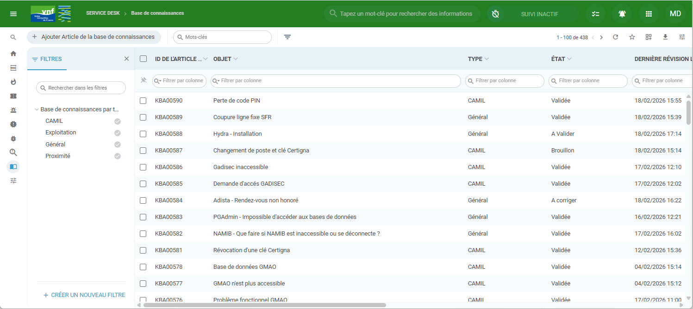

Procédure rédaction d'une base de connaissance — VNF
Rédiger une base de connaissance sur un incident ou une demande afin de faciliter le traitement par les autres techniciens.
À la réception du ticket, il faut d'abord vérifier dans la banque à base de connaissances (KB) si une procédure n'existe pas déjà.

Une fois le ticket résolu, le technicien se doit de lister toutes les étapes à faire en y apportant le plus de précision que possible avec des captures d'écran si nécessaire.
Afin de respecter une mise en forme entre toutes les KB, des templates sont à utiliser pour séparer chaque étape.
Après avoir rédigé la KB, le technicien référent doit envoyer un mail au Pôle National Support afin de faire valider ou non cette base de connaissance.
Si la KB est validée alors le statut de celle-ci évoluera en "Validée". (Ces statuts sont uniquement modifiés par le Pôle National Support).
Lorsqu'une KB est validée, l'information doit être transmise à tous les techniciens pour prise en compte et mise en application.
Si un ticket concernant un incident ou une demande similaire n'applique pas la KB, le Pôle National Support se réserve le droit de déclarer un Hors Process sur le ticket.